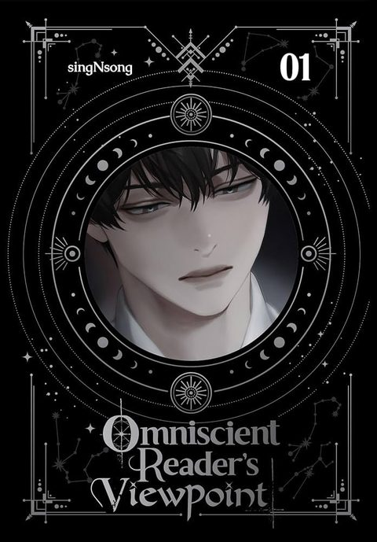

Omniscient Reader's Viewpoint
Synopsis
The only reader to finish a web novel finds the story’s apocalypse come true, and he is the only one who knows how it ends.
The Only Reader
Story overview
Kim Dokja has read the same web novel for years, and he is the only reader who made it to the final chapter. When the world suddenly turns into the story’s apocalypse, he is the only person who knows how it unfolds.
He uses that knowledge to survive, but the story begins to change in ways he never expected.